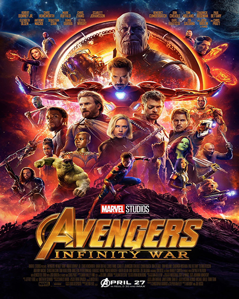

3° lugar - Vingadores: Guerra infinita
Homem de Ferro, Thor, Hulk e os Vingadores se unem para combater seu inimigo mais poderoso, o maligno Thanos. Em uma missão para coletar todas as seis pedras infinitas, Thanos planeja usá-las para infligir sua vontade maléfica sobre a realidade.
